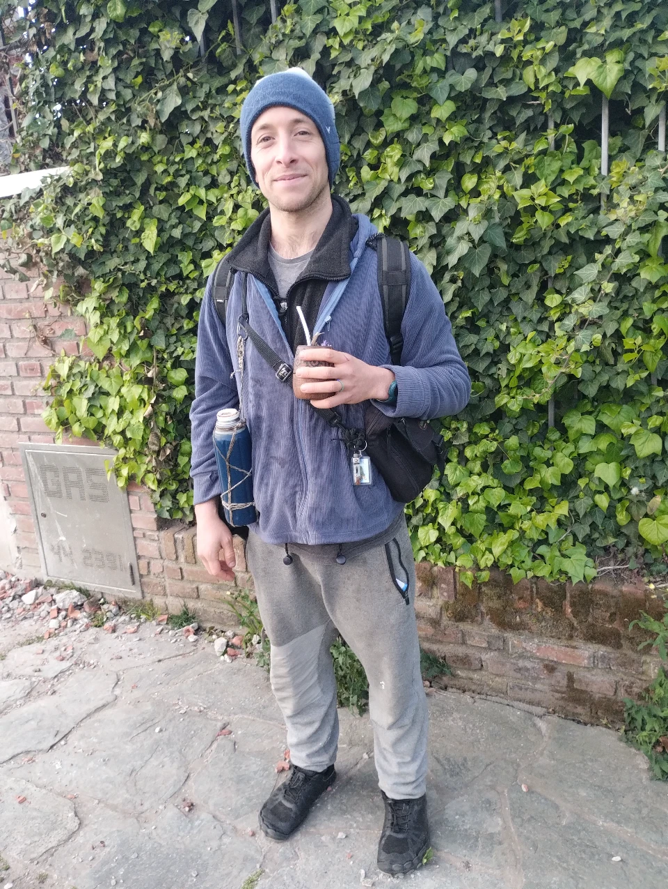

Ezequiel
Adrián
Schwartzman
Free Software Developer
Possibilitator
in training
Free Software Developer
Possibilitator
in training
Web Jam 0.2.0
is out.
Check changelog
Starring it on Github helps.
About
Me
Web Jam
Curriculum
Vitae
Web
Portfolio
Web y Mates Club
Web Training
Web
Engineering
Spaceholding for Co-living
Co-working
Hacking Space
Personal
Service / Healing
Coaching & Feedback
Gaia
Stickers
Writing
Cooking
Videoing
Web developing...